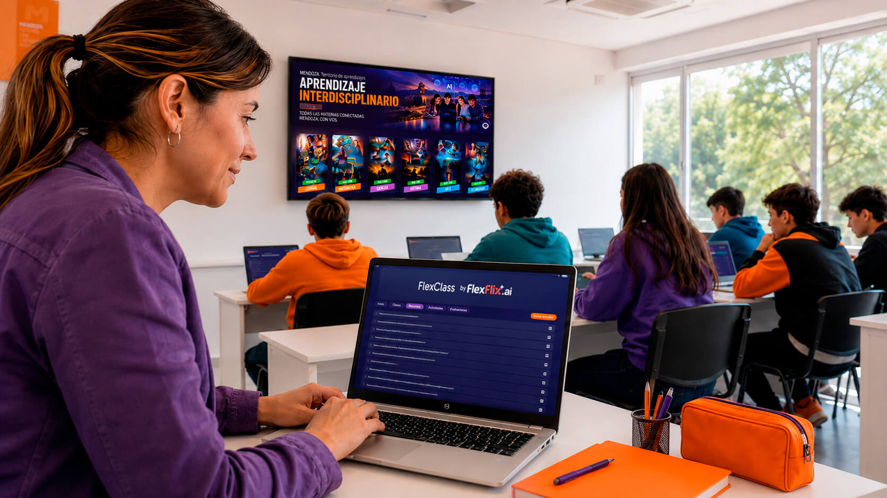
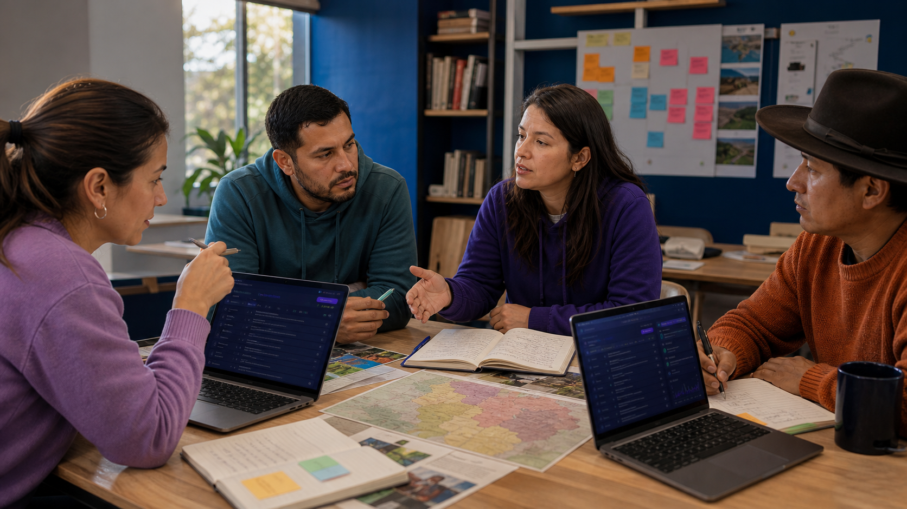
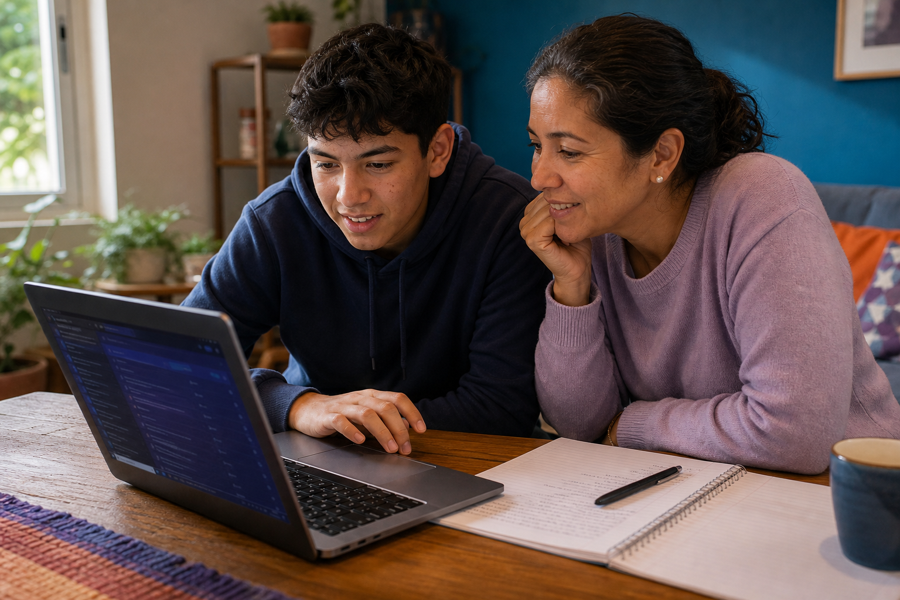
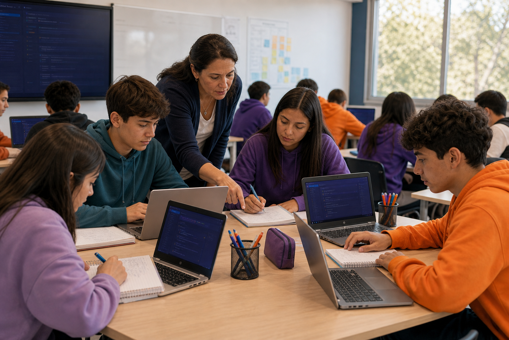
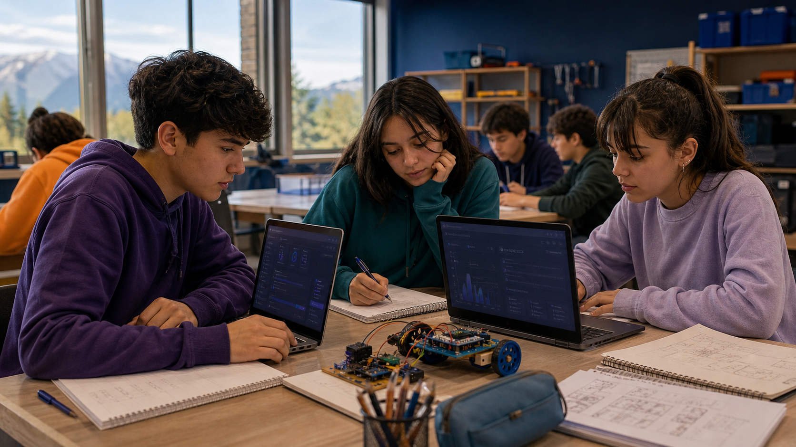
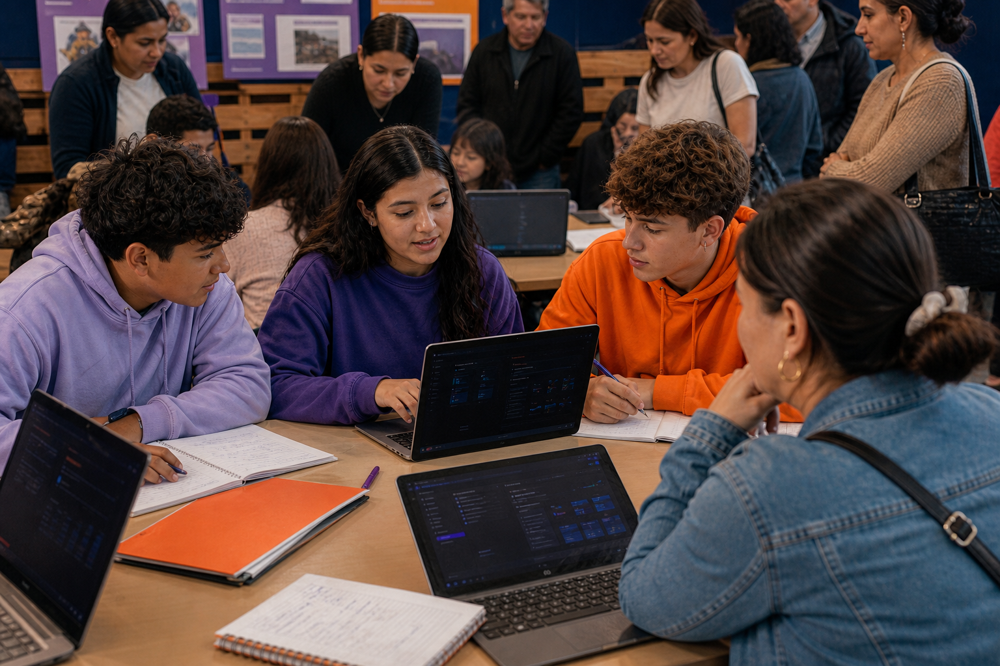
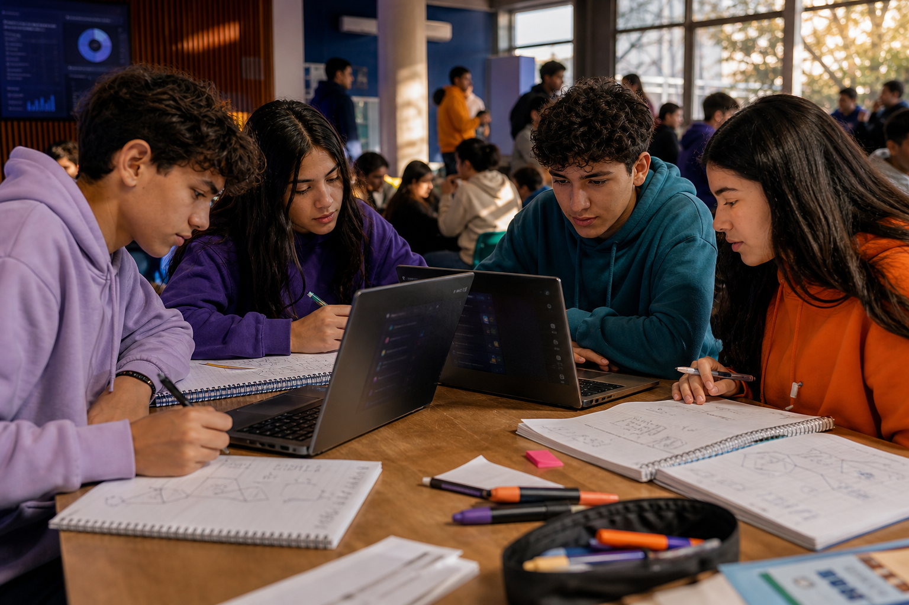

B2GCORE
Gobiernos y
escuelas públicas
Política educativa, programas, implementación territorial, evidencia e impacto público.
Explorar implementacionesArquitectura de Gobernanza Cognitiva
El sistema que transforma la IA en aprendizaje real. Siete capas que operan como una sola infraestructura: medible, segura y escalable.
FlexFlix · Infraestructura operativa y educativa.
Nuestro propósito
La soberanía cognitiva es la capacidad de pensar, decidir y crear nuestro futuro usando IA con criterio, ética y propósito.
En una Clase Generativa Curricular, el estudiante comprende, conversa y construye conocimiento. El docente orienta el proceso. La tecnología lo amplifica.
Así se convierte en una claseEl sistema, por dentro
Desde los contenidos hasta la gobernanza. Explorá cómo se conecta cada parte del sistema.
Contenidos + Metodología + IA + Datos + Gobernanza Interoperabilidad en cada nivel
Metodología · El protocolo cognitivo
Una secuencia diseñada para preservar actividad cognitiva durante el aprendizaje con inteligencia artificial. Personaliza · Aprende · Conversa · Crea · Comparte.
Una Clase Generativa Curricular integra currículo, diálogo con IA, creación, intervención docente y evidencia en una misma secuencia: Currículo · Docente · PACCC™ · IA · Creación · Evidencia.

La IA generativa genera respuestas. La Clase Generativa Curricular genera pensamiento. No diseñamos clases alrededor de lo que la IA puede producir: las diseñamos alrededor de lo que queremos que el estudiante desarrolle.
Modelos · Un ecosistema, distintos modelos
Nuestro core es transformar sistemas educativos públicos, pero la arquitectura y el contenido pueden llegar a distintas comunidades según quién impulsa el acceso.
Política educativa, programas, implementación territorial, evidencia e impacto público.
Explorar implementacionesUna arquitectura integral para incorporar IA al currículo bajo conducción docente.

Acceso para familias y comunidades como propuesta de valor e impacto.

Entretenimiento inteligente para aprender, descubrir y desarrollar capacidades fuera de la escuela.
Gobiernos · Políticas públicas
Cada jurisdicción construye su política. FlexFlix aporta la arquitectura para hacerla posible. Reconocimientos, testimonios, escala e impacto funcionan como validadores de cada implementación.

Educación secundaria
Mendoza Aumentada
Arquitectura sistémica, múltiples programas y despliegue provincial.
Primaria
Entre Ríos Aprende+
Aprendizajes fundamentales, IA curricular e identidad territorial.

Implementación pública
Neuquén SoberanIA
Trayectoria educativa, Operador IA y capacidades productivas.
De la estrategia a la escuela. De la escuela a capacidades observables.
Audiencias
Cada puerta responde a una necesidad concreta y muestra una prueba real.
Evidencia
La experiencia de quienes enseñan y aprenden, junto con la evidencia que permite comprender su evolución.
Este espacio reunirá relatos en video de estudiantes y docentes.
No medimos exposición tecnológica. Medimos desarrollo humano. Diagnóstico inicial · Preguntas · Conversaciones · Creaciones · Intervenciones · Evolución.
Desarrollo cognitivo aumentado.
El uso es actividad. La capacidad es resultado.
Diagnóstico inicial · Preguntas · Conversaciones · Creaciones · Intervenciones · Evolución.
Impacto · Aprendizaje visible + impacto público
Una política educativa necesita transformar capacidades, pero también necesita hitos que estudiantes, familias, escuelas y comunidades puedan ver, vivir y celebrar.
01 / Progreso individual
Hace visible el recorrido individual: cada logro deja una marca tangible de progreso y pertenencia.

02 / Comunidad
Convierte el aprendizaje en un acontecimiento territorial que reúne escuela, familias, comunidad y política pública.

03 / Certificación
Llevan las capacidades a desafíos reales y crean un hito público de participación, reconocimiento y comunicación.
Transformamos aprendizaje invisible en evidencia visible, reconocible y celebrable.
Valor pedagógico para el estudiante. Valor institucional para la escuela. Valor público para una política educativa que necesita materializar su impacto.
Contacto · Soberanía cognitiva
Desarrollamos soluciones educativas con IA curricular en español, acompañamiento docente, medición de impacto y estándares de privacidad para cada jurisdicción e institución.
Diseño a medidaEl recorrido se arma sobre el diseño curricular de tu jurisdicción.
IA curricular en españolFlexGPT conversa con los estudiantes en español y sobre el tema de la clase.
Capacitación y acompañamiento docenteEl equipo acompaña durante todo el programa, no solo en el arranque.
Medición de impacto con IDCAUn índice auditable del crecimiento del pensamiento, más allá de la nota.
Privacidad y protección de datos de menoresEstándares de privacidad y uso supervisado por docentes.
También podés escribirnos a contacto@flexflix.ai
Implementación
De la estrategia pública al aula. Del aula a la evidencia.